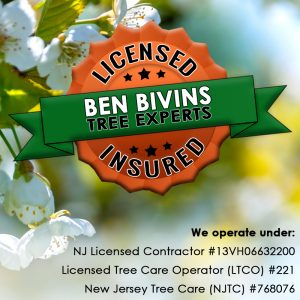

Finding and picking the right company for tree service in Atlantic County is a big decision. Tree care is not only important, but can also be very dangerous. Therefore, it is crucial to pick the right crew to work on your trees. When hiring a tree company, there are several important factors that you should consider to ensure that you choose a reputable and reliable company that will provide high-quality work. Here are some of the most important things to keep in mind:

Licensing and Insurance is Crucial for Tree Companies in Atlantic County
Make sure the tree company you hire is properly licensed and insured. This will protect you in case of any accidents or damage that may occur during the job. We are fully licensed and insured and ready to tackle any tree related service with safety and professionalism.
There is No Substitute for Experience
Look for a tree company that has experience. Although it is nice to think about supporting new businesses, when it comes to tree care, you want someone who has seen it all. With experience comes knowledge, efficient work practices, safety, and a quality job. Ben Bivins Tree Experts have been providing tree service in Atlantic County since 2012.
References and Reviews are Important
Ask the tree company for references from previous customers and check online reviews to get an idea of their reputation. This can give you an idea of the quality of their work and customer service. Social media has become a popular place for customers to review and provide their experiences with all types of businesses. Check out our Facebook page and our testimonials page to see what our clients have to say about us!
Safety Practices are Critical for Tree Service in Atlantic County
Ensure that the tree company follows proper safety practices and protocols to minimize the risk of accidents and injuries. Tree services can be very dangerous no matter the job. As well as protecting the workers, tree companies should also be concerned with protecting your property. Falling trees and limbs can cause major damage to your yard and if done incorrectly, your neighbors’ yards. Making sure a tree company follows all OSHA safety protocols and DOT guidelines is vital.
The Best Tree Companies Own Their Own Equipment, Tools, and Trucks
Check that the tree company has the necessary equipment and tools to perform the work safely and efficiently. Make sure they have well-maintained and up-to-date equipment to ensure that the job is done right. When you hire Ben Bivins Tree Experts, you get everything from us. There is no rental equipment and we don’t hire subcontractors. Our team and our equipment is all our own.
Cost and Estimates can Make the Difference
Hiring the best tree company doesn’t always mean hiring the most expensive. Get several estimates from different tree companies and compare them. Make sure the estimates are detailed and include all the work that needs to be done. Be cautious of companies that offer extremely low estimates, as this may indicate a lack of experience or quality work. We offer free estimates for every job. We always examine the property and trees before providing an estimate so that we can ensure we give you an accurate price for the work.
Communication and Customer Service are Imperative for any Business
Look for a tree company that is responsive, communicative, and attentive to your needs. Good customer service can make the entire process much smoother and more enjoyable. At Ben Bivins Tree Experts, customer service is as important to us as trees. We are dedicated to providing quality work in a safe and professional manner.
Feel Good About Choosing Ben Bivins Tree Experts for Tree Service in Atlantic County
Taking all these factors into consideration, we think you’ll find that we fit the bill! You can trust us to take care of your trees safely and effectively while placing emphasis on customer service. For tree service in Atlantic County and Ocean County, contact us today!